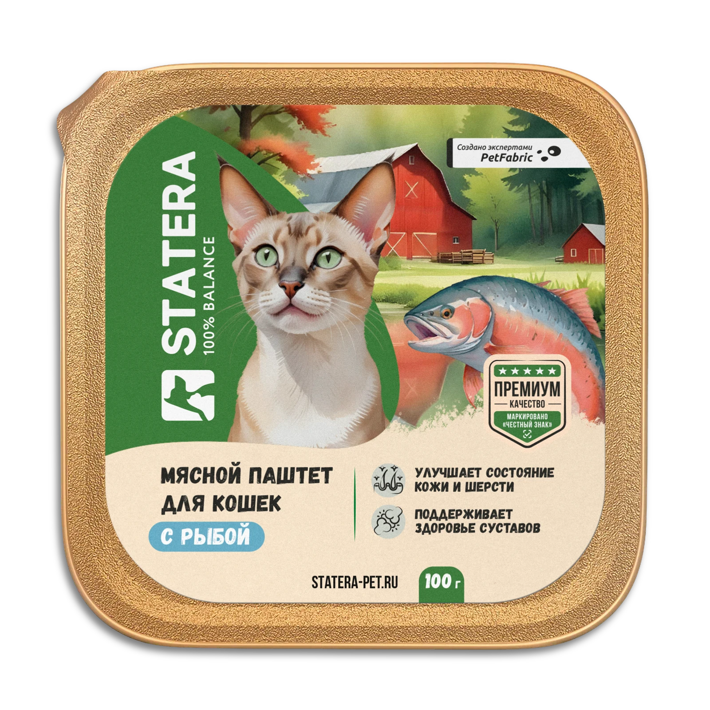

Маркетплейсы
Главные карточки, инфографика и визуальные воронки товара.
Графический дизайнер & AI-креатор
Превращаю идеи в визуал с характером. От упаковки и 3D до карточек товаров и рекламных креативов.


 От этикетки до 3D
От этикетки до 3DЯ графический дизайнер и AI-креатор. В дизайне с 2021 года: создаю интерфейсы, упаковываю продукты и помогаю брендам рассказывать о себе через визуал.
Люблю проекты, где встречаются понятный смысл, смелая подача и внимание к деталям.
Катя ♡Разные задачи. Один внимательный подход.
Нажми на проект — внутри подборка работ и детали.
Главные карточки, инфографика и визуальные воронки товара.
Этикетки, мокапы и предметные 3D-визуализации.
Креативы, баннеры и контент для Яндекс Карт и 2ГИС.
Интерфейсы, в которых визуал помогает взаимодействию.
Креативы для Яндекс Карт и 2ГИС
Инфографика детских игрушек
От инфографики до 3D-визуализаций
UI/UX-дизайн
НИУ МЭИ
Высшее техническое образование
Яндекс Практикум
Профессиональная переподготовка в области 3D-дизайна
Выбираю инструмент под задачу: графические редакторы, 3D и ИИ дополняют друг друга.
Есть идея, продукт или задача?
Расскажи — начнём с разговора.